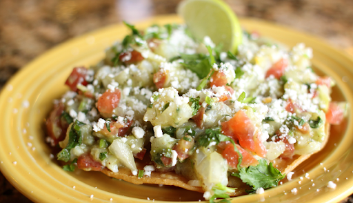

| Inicio | Antojitos populates | Recetas |
Chiles Rellenos de Queso
 |
Ingredientes:
|
Pasos:
- Se asan los chiles.
- Se guardan en una bolsa de plástico por 20 minutos.
- Se pelan y se les quita las semillas.
- Se rellenan de quesillo y epazote.
- A los huevos se les separa la clara de las gemas, las claras se baten a punto de turrón.
- A las claras se les agrega las gemas y se baten junto con la clara.
- Se sumergen los chiles en la harina y después por la mezcla de clara y gemas.
Tostaditas
|  | Ingredientes:
|
Pasos:
- Se fríen las tostadas con aceite.
- Se pica la col.
- Se ralla el queso.
- Se pica el tomate.
- Se pica el aguacate
- Se pica la cebolla.